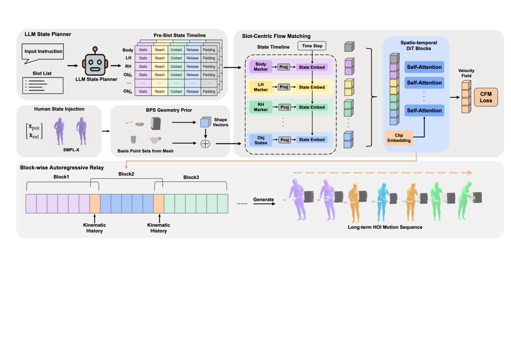

Synthesizing long-horizon 3D human-object interactions (HOI) in which a person manipulates multiple objects across a continuous sequence of phases is an open problem. Current generative approaches produce motion primitives independently, typically resetting from a canonical rest pose, and therefore cannot model the evolving correspondence between the human body and objects as physical states change. This results in abrupt transitions at primitive boundaries and a progressive loss of contact consistency over extended horizons.
We present CRR-Flow (Contact-Reach-Release Flow), a framework that couples high-level task planning with state-aware motion synthesis via conditional flow matching. An LLM-based planner first decomposes multi-step instructions into per-slot physical state schedules, assigning a discrete interaction phase to each interaction component (body, hands, and objects) over contiguous temporal segments. These schedules condition a slot-centric Diffusion Transformer whose dedicated spatial tokens per interaction component allow each to receive its own state and geometry information. A block-wise autoregressive strategy in which each generation block is conditioned on the terminal kinematic history of the previous block, propagating position and velocity across primitive boundaries.
Experiments on OakInk2 show that CRR-Flow reduces FID by 84.5% relative to InterAct HOIDiff (0.438 vs. 2.821) and achieves long-horizon generation over 60+ seconds with only 8.6% degradation from single-segment quality.
CRR-Flow combines an LLM state planner, slot-centric flow matching, and block-wise autoregressive relay for long-horizon generation.

Decomposes multi-step instructions into per-slot state timelines, assigning a discrete interaction phase (Contact, Reach, Release, Idle) to each body component and object across contiguous temporal segments.
Dedicated spatial tokens for body, hands, and each object allow per-component state injection and geometry conditioning within a Diffusion Transformer architecture.
Propagates kinematic history (position and velocity) from the terminal frames of each generation block to the next, ensuring smooth transitions across primitive boundaries.
Side-by-side comparison of generated motions across 10 diverse manipulation tasks. Click a task name to switch the view.
Videos are synchronized. Play or seek any one to control all.
"Scoop cheese from the plate with the spoon"
"Pick up the plate and rearrange it on the table"
"Take the donut from the box"
"Insert the lightbulb into the socket"
"Cut the bread with the knife"
"Grip the sugar cubes from the bowl"
"Open the microwave door"
"Plug in the lamp"
"Pour from the pan"
"Pull out the drawer"
Zero-shot transfer to the HIMO benchmark, comparing against methods trained natively on HIMO data.
Videos are synchronized. Play or seek any one to control all.
"One person picks up the phone with his right hand and the headset with his left hand."
Objects: Headset, Phone
"The performer picks up the hammer with his right hand and holds the beer with his left hand, hitting the beer with the hammer."
Objects: Beer, Hammer
"The person picks up the bottle, puts it down, then picks up the hammer and strikes the bottle."
Objects: Bottle, Hammer
"A guy picks up the phone in his right hand, puts it to his ear, and then places the phone on the phoneholder, holding the holder with his left hand."
Objects: Phone, Phoneholder
"A person places pyramid-M on cylinder-M with his left hand."
Objects: Cylinder-M, Pyramid-M
CRR-Flow chains multiple generation blocks via kinematic history relay, generating 60+ seconds of continuous multi-object manipulation.
Scoop cheese sequence: 3 segments, 560 frames (~56 seconds). The autoregressive relay maintains contact consistency across segment boundaries.
| Method | R@1 ↑ | R@2 ↑ | R@3 ↑ | FID ↓ | Match ↓ | Div → | MultiMod → | M-MSE ↓ |
|---|---|---|---|---|---|---|---|---|
| PriorMDM† | 0.410 | 0.519 | 0.585 | 15.701 | 13.836 | 5.302 | 5.326 | — |
| InterAct HOIDiff‡ | 0.641 | 0.796 | 0.910 | 2.821 | 5.919 | 1.494 | 2.233 | 0.0385 |
| CRR-Flow w/o AR | 0.672 | 0.859 | 0.940 | 0.445 | 3.370 | 1.407 | 1.923 | 0.0202 |
| CRR-Flow (Ours) | 0.720 | 0.891 | 0.953 | 0.438 | 3.010 | 1.256 | 0.681 | 0.0140 |
† Body-only (no object generation). ‡ Trained on primitive-level data. Bold red values indicate best performance. ↑ higher is better, ↓ lower is better, → closer to real is better.
| Method | R@1 ↑ | R@2 ↑ | R@3 ↑ | FID ↓ | Match ↓ | Div → | MultiMod → |
|---|---|---|---|---|---|---|---|
| MDM | 0.026 | 0.065 | 0.093 | 39.510 | 14.621 | 2.831 | 1.826 |
| PriorMDM | 0.024 | 0.058 | 0.088 | 40.272 | 15.104 | 2.776 | 1.590 |
| HIMO | 0.105 | 0.193 | 0.285 | 18.143 | 11.298 | 3.108 | 2.474 |
| HOIDiff | 0.114 | 0.210 | 0.299 | 17.651 | 11.082 | 2.960 | 2.349 |
| CRR-Flow (Ours) | 0.139 | 0.248 | 0.342 | 15.219 | 10.523 | 2.894 | 2.187 |
All methods evaluated on the HIMO test set. CRR-Flow was trained on OakInk2 (zero-shot transfer).
| Task | Segments | Frames (Duration) | M-MSE ↓ |
|---|---|---|---|
| Rearrange plate | 4 | 740 (74s) | 0.0116 |
| Scoop cheese | 3 | 560 (56s) | 0.0185 |
| Insert lightbulb | 3 | 560 (56s) | 0.0139 |
| Take donut | 3 | 560 (56s) | 0.0167 |
| Average | 3.25 | 605 (60.5s) | 0.0152 |
Long-horizon M-MSE (0.0152) represents only 8.6% degradation from single-segment quality (0.0140).
@inproceedings{crrflow2026acmmm,
title={CRR-Flow: State-Aware Autoregressive Flow for Long-Horizon
Human-Object Interaction Generation},
author={Anonymous},
booktitle={Proceedings of the ACM International Conference
on Multimedia (ACM MM)},
year={2026}
}